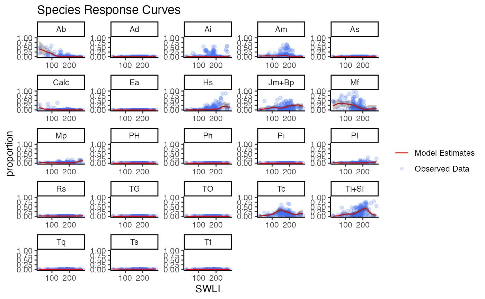

response_curves.RdCreate Species Response Curves
response_curves(modern_mod, species_select = NULL)An object of class BTF from run_modern
a vector of species names for which you want to create response curves
Response curve data files (empirical and model) and SRC plots
test_modern_mod <- run_modern(modern_elevation = NJ_modern_elevation,
modern_species = NJ_modern_species,
n.iter = 10,
n.burnin = 1,
n.thin = 1)
#> Start chain ID 1
#> module glm loaded
#> module dic loaded
#> Compiling model graph
#> Resolving undeclared variables
#> Allocating nodes
#> Graph information:
#> Observed stochastic nodes: 175
#> Unobserved stochastic nodes: 2941
#> Total graph size: 17990
#>
#> Initializing model
#>
#> Hooraah, Chain 1 has finished!
#> Start chain ID 2
#> Compiling model graph
#> Resolving undeclared variables
#> Allocating nodes
#> Graph information:
#> Observed stochastic nodes: 175
#> Unobserved stochastic nodes: 2941
#> Total graph size: 17990
#>
#> Initializing model
#>
#> Hooraah, Chain 2 has finished!
#> Start chain ID 3
#> Compiling model graph
#> Resolving undeclared variables
#> Allocating nodes
#> Graph information:
#> Observed stochastic nodes: 175
#> Unobserved stochastic nodes: 2941
#> Total graph size: 17990
#>
#> Initializing model
#>
#> Hooraah, Chain 3 has finished!
#> Run complete!
response_curves(test_modern_mod)
#> $src_plot

#>
#> $src_empirical_dat
#> # A tibble: 4,025 × 3
#> SWLI species proportion
#> <dbl> <chr> <dbl>
#> 1 196. Ti+Sl 0.315
#> 2 196. Mf 0
#> 3 196. Tc 0.0385
#> 4 196. Jm+Bp 0.123
#> 5 196. Hs 0.492
#> 6 196. Am 0.00769
#> 7 196. Ai 0
#> 8 196. Ab 0
#> 9 196. Mp 0.00769
#> 10 196. Pl 0.0154
#> # … with 4,015 more rows
#>
#> $src_model_dat
#> # A tibble: 4,025 × 5
#> SWLI species proportion proportion_lwr proportion_upr
#> <dbl> <chr> <dbl> <dbl> <dbl>
#> 1 27.0 Ti+Sl 0.00682 0.00217 0.0174
#> 2 27.0 Mf 0.213 0.0110 0.507
#> 3 27.0 Tc 0.0172 0.00309 0.0668
#> 4 27.0 Jm+Bp 0.0278 0.00112 0.124
#> 5 27.0 Hs 0.00610 0.000215 0.0324
#> 6 27.0 Am 0.0383 0.00932 0.0825
#> 7 27.0 Ai 0.0138 0.00288 0.0444
#> 8 27.0 Ab 0.402 0.124 0.834
#> 9 27.0 Mp 0.0225 0.00599 0.0471
#> 10 27.0 Pl 0.0203 0.000808 0.0504
#> # … with 4,015 more rows
#>